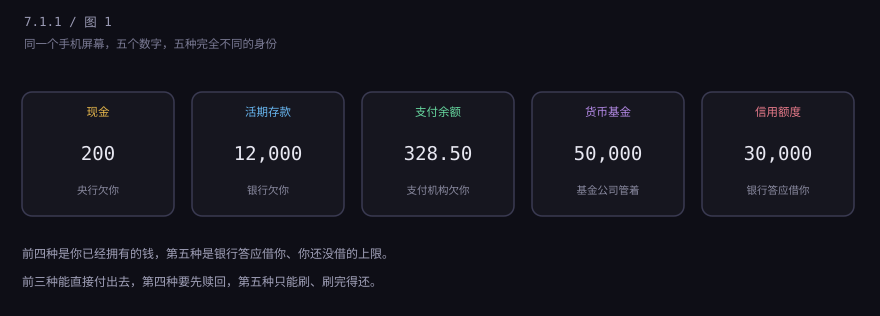
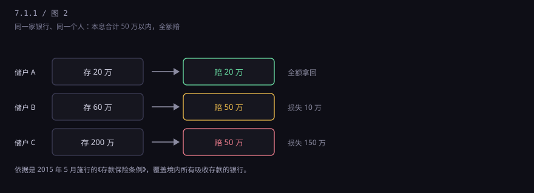
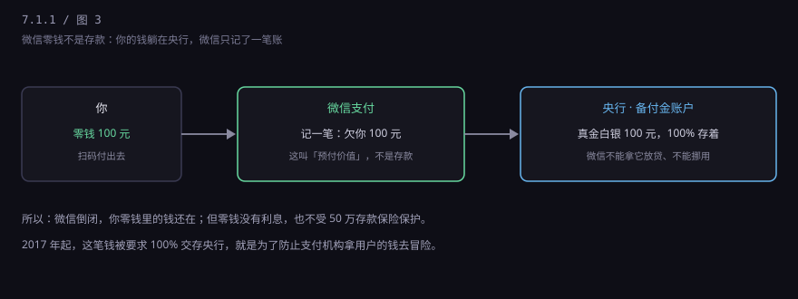
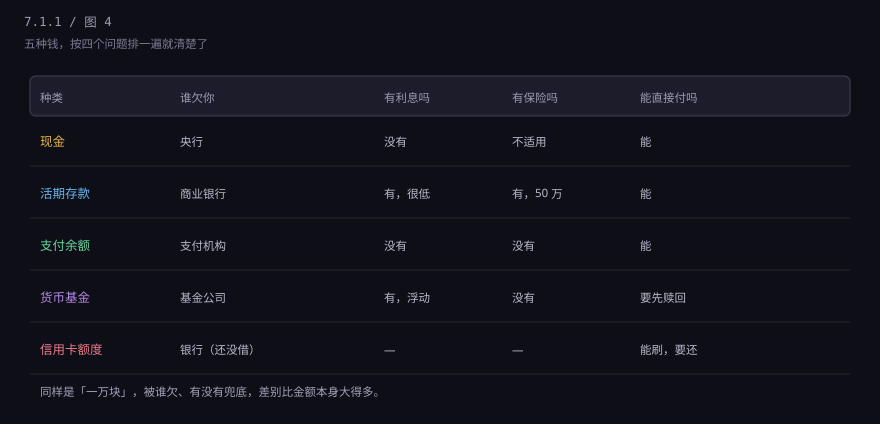

约 0.3 万字 · 4 张图 · 同样标着「元」，被谁欠、有没有利息、出事谁兜底，全都不一样
先把它们并排放好，你会有个直觉：这五样东西，长得都像"钱"。

判断一样东西是不是"钱"，有个特别土但特别好用的办法：问一句"这钱是谁欠我的？" 你手里能花的每一分钱，背后一定有一个人（或者一个机构）欠着你对等的债务。 现金是央行欠你，活期是银行欠你，零钱是支付机构欠你，余额宝是基金公司替你管着。 而信用卡额度，谁都不欠你——那是银行答应在你开口时借给你。
把这一句话记住，后面五节全是它的展开。
你手上那张一百块，正面印着"中国人民银行"。它不是一张纸那么简单， 它的正式身份是央行的负债——说白了，央行欠持票人一百块钱的购买力。 纸币上那句"凭票即付"的老话，就是这个意思。
为什么大家信它？因为它是法定货币：在中国境内，任何单位和个人不能拒收人民币现钞还债。 你拿一百块去还账，对方不能不收。这个"必须收"，是法律给的，不是市场给的。
现金有两个别的钱没有的好处：一是不需要任何人配合就能花——手机没电、银行系统崩了、断网了， 现金照样能用；二是匿名，你买包烟，没人知道是你买的。
它的坏处也直白：会丢、会被偷、放着不生息，而且大额携带很麻烦。 你工资卡里那 12,000 块如果全取成现金放家里，一年后还是 12,000， 按 2% 的通胀算，实际上少了 240 块的购买力。
这是绝大多数人一辈子都没转过来的一个弯：钱不是"放在"银行，是"借给"银行。
你把一万块存进去，法律上发生的不是你"保管"了一万块， 而是你借给银行一万块，银行欠你一万块，随时可以要回去。 银行拿到这一万，转手就贷给了别人（房贷、车贷、企业经营贷）。 它赚的是"借进来便宜、贷出去贵"的差价，这就是银行最核心的生意。
所以当银行出问题时，你作为储户的身份不是"物主"，而是债权人—— 跟那些借钱给银行的机构排在同一条队里，等着清算。 这个认知很冷，但它是理解整个银行体系的第一块砖。
还有一个直接后果：活期利息低得可怜。 因为活期意味着你随时可能来取，银行不敢把这笔钱拿去做三年期的贷款， 只能趴在账上或者买点短期资产。它赚不到什么钱，自然也分不了你多少。 你图的是方便，它给你的是方便，利息就是个意思。
银行也会倒。中国有过，比如 1998 年的海南发展银行，2020 年的包商银行。 真倒了，你的存款怎么办？
2015 年 5 月起，中国施行《存款保险条例》： 同一家银行、同一个人，本金加利息合计50 万元以内，全额赔付；超过 50 万的部分， 从银行清算的财产里按比例受偿——能拿回多少，要看银行还剩多少东西。

这条规则解释了一个生活里很常见的建议：大额存款要分散到几家银行。 不是为了利息高一点，是为了每一笔都落在 50 万的保护圈里。 同样地，你在同一家银行买的理财产品，不算"存款"，不受这个保护——柜台上那句"理财非存款"不是免责套话， 是实话。
存款保险的钱不是财政拨的，是所有吸收存款的银行按业务规模交的保费，凑成一个基金。 换句话说，是银行体系自己给自己兜底。
微信零钱里那 328.50 块，性质又不一样。它不是存款，法律上的名字叫预付价值—— 你把钱交给微信支付，微信支付欠你一笔等额的"可以随时付出去的东西"。
很多人担心：那微信要是倒了，我的零钱是不是就没了？ 答案是不会，因为从 2017 年起，监管要求支付机构收到的这些钱， 100% 交存到央行的一个专门账户里，叫备付金账户。微信不能拿这笔钱去放贷、去投资、去挪作他用。 它只是个记账的，真钱一直躺在央行。

但零钱也有两个短板。第一，没有利息——它本来就不是存款， 监管也不允许支付机构给你的零钱付息（否则就成了变相吸收存款）。第二，不受存款保险保护， 因为它压根不是存款。它安全，是靠"100% 备付金"这个制度安排，不是靠保险。
这也顺带解释了一个老问题：为什么微信零钱有年累计限额（一类支付账户 20 万/年）？ 因为它的法律身份是"支付账户"，不是"银行账户"。监管给它的定位就是"够你日常花"， 不是让你把它当存钱罐。
余额宝里那 50,000 块，点开"详情"会看到一行小字：货币市场基金。 你买的不是存款，是一只基金的份额；基金公司拿这笔钱去买国债、央行票据、银行存单这类短期资产， 赚到的利息分给你，这就是那百分之一点几的收益来源。
所以严格来说：货币基金不保本。合同里从来不承诺"保本保收益"， 只是它买的资产期限极短、信用极好，历史上几乎没亏过，于是大家就当它稳。 "几乎没亏过"和"不会亏"是两件事，2008 年美国那只著名的货币基金就跌破过 1 美元。
它和活期的真实区别是：活期你想要立刻就能取，货币基金要先赎回。 现在 App 做得太快，你点一下就到账了，感觉一样，但底层是"卖出份额、资金到账"两步。 2018 年以后，监管还规定了单只货币基金单日快速赎回上限 1 万元，超过就要走普通赎回，第二天到。
一句话：余额宝是"收益高一点的活期替代品"，不是"利息更高的存款"。 它没有存款保险，也不受 50 万那条线保护。
信用卡上那个"可用额度 30,000"，是这五样里唯一一个不是钱的。 它是一份授权：银行答应，在你刷卡的时候，先替你付，你之后还它。
这个方向正好反过来。前面四样，都是"别人欠你"；信用卡额度是"你随时可以欠别人"。 你没刷之前，它对你的净资产贡献是零——它只会让很多人产生"我有三万块"的错觉。
一旦刷了，性质立刻变了：你欠银行钱，而且这笔钱很贵。 中国信用卡的循环信用年化利率普遍在 13%～18% 之间， 你只还"最低还款额"的时候，剩下的部分就按这个利率开始生息，还是按全额从消费那天算起。 这不是本节重点，7.4 会专门讲卡，但你只要记住一句话： 额度是负债的入口，不是资产的证明。
抽屉里那 200 美元，是另一个国家写的欠条。 它是美联储的负债，在中国境内不能直接花，你得先换成人民币。 它的价值随汇率浮动：人民币从 7.1 变到 7.3，你这 200 美元就多值 40 块人民币。
黄金更特殊。它不欠任何人——它不是谁写的欠条，它就是一块金属。 所以它不产生利息，也不会归零。人类几千年认它，靠的是"稀缺 + 谁都认"， 而不是"某个机构承诺兑付"。
再往后，还有三样东西经常被摆在一起说，但它们完全不是一类：
这三样后面各有一节单独讲（7.1.4、7.1.5、7.1.6），这里先知道它们不是一回事就够了。
把这五种钱按四个问题排一遍：谁欠你、有没有利息、有没有保险、能不能直接付。

看完这张表你会发现，"我手上有六万多"这句话其实说得不准确。准确的说法是： 我有 200 块现钞、1.2 万银行欠我的活期、328 块支付机构欠我的预付价值、 5 万基金份额，外加一个"最多能借 3 万"的许可。
不是让你变成会计，是三个很具体的场景。
场景一：听说某家银行出事。 如果你知道"存款"和"理财"是两回事，就明白 50 万以内不用慌， 50 万以上该分散；也知道客户经理推荐的"稳健理财"不在保险范围内。 很多人在这件事上吃亏，不是因为贪，是因为没分清。
场景二：把大钱放在微信零钱里。 零钱安全，但没利息、有年限额。放几万在里面当日常开销没问题， 把几十万闲钱放进去，就是白白放弃利息，还占着支付账户的额度。
场景三：看自己的"总资产"。 很多人算自己有多少钱时，会把信用卡额度加进去，或者把花呗额度当余额。 按本节的标准，这些是"能借的钱"，不是"已有的钱"。把两者混在一起， 人就会高估自己的安全垫，然后在不该花的时候花。
再往下走一层，所有这些"欠条"能运转，靠的都是同一件事： 有人记账，有人相信这本账。 而记账这件事，在个人层面是银行 App 里那行数字，在国家层面就是央行和商业银行组成的两级体系。 下一节先不急着讲银行，先讲那个所有人都绕不开的东西：美元。 为什么全世界的生意都要用美元结算，为什么美国印钱能影响你楼下的菜价。